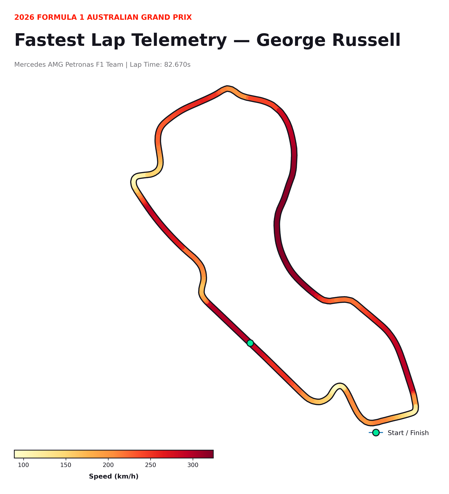
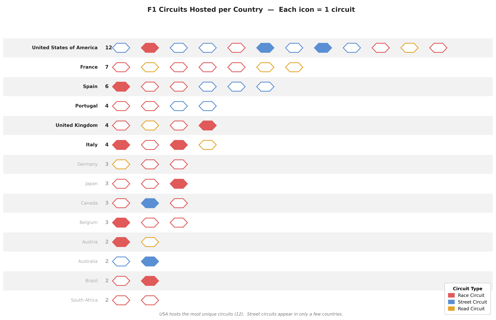
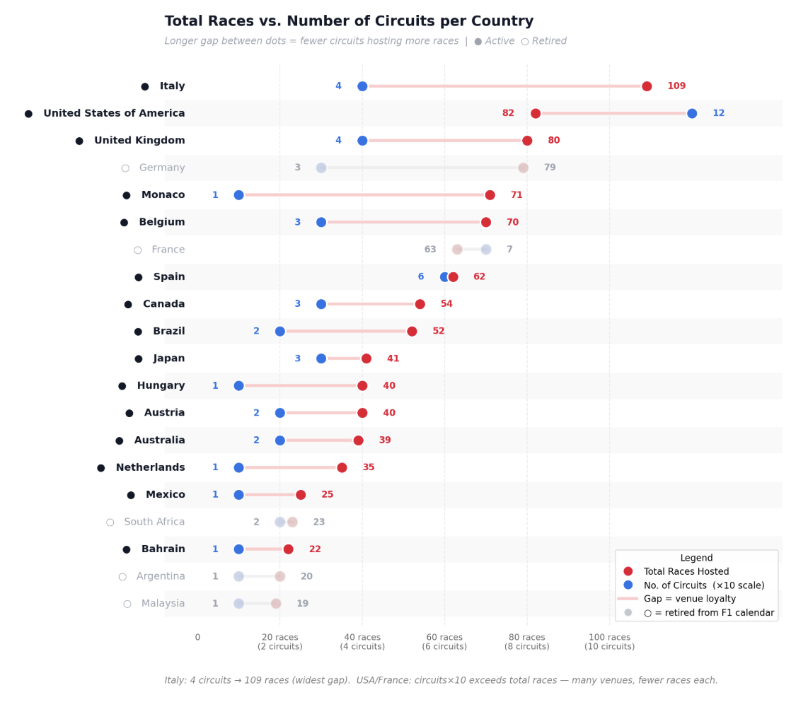
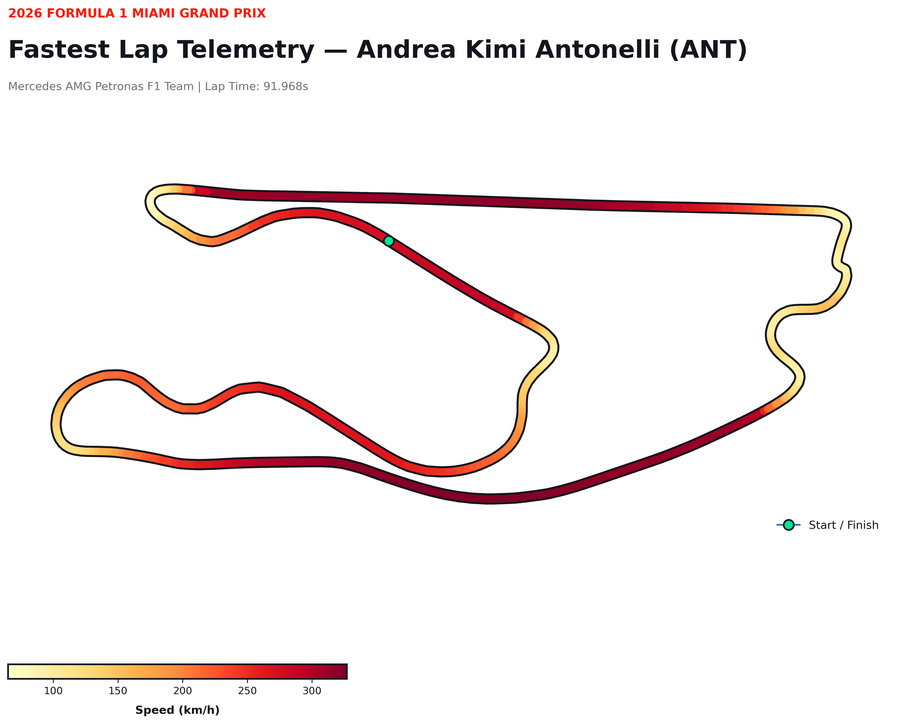

Albert Park (George Russell)

The telemetry profile of Albert Park reveals extended high-speed zones (dark red bands), particularly around the swept back-straight sections where cars consistently exceed 300 km/h.
Formula 1 represents the pinnacle of motorsport, where performance is determined by the complex interplay between engineering, driver skill, and circuit design. This project investigates the structural and dynamic characteristics of F1 circuits over time. Utilizing historical race calendars, lap-time datasets, and high-frequency telemetry data via the FastF1 API, we analyze global footprint trends, quantify circuit layout stability using coefficient of variation metrics, and dissect micro-level driver performance across specific track sectors. Our findings demonstrate how regulation shifts and track alterations fundamentally reshape performance metrics, offering deep quantitative insights into the modern racing ecosystem.
Formula 1 has evolved from a predominantly European championship into a massive global spectacle. To understand the underlying infrastructure, we visualized the unique distribution of circuits across hosting nations alongside historical hosting frequencies.

While some nations like the United States have utilized an extensive array of distinct venues (12 unique tracks), other countries display immense historical loyalty to a handful of iconic layouts.

Track safety standards and modern architectural designs often require modifications to existing circuits. To quantify how consistent these venues remain, we conducted a Circuit Layout Stability Analysis across the entire calendar from 2018 to 2024 using the Coefficient of Variation ($CV$) of historical fast laps.

Venues like the Italian and Austrian Grands Prix demonstrate extreme structural consistency ($CV < 1\%$), meaning the configuration has barely altered. Conversely, events like the Russian and Tuscan Grands Prix exhibit high volatility ($CV \ge 12\%$) due to rapid calendar shifts, short-lived appearances, or major tracking configuration changes.
To understand how macro layout changes translate to on-track timing, we isolated the Melbourne (Albert Park) Grand Prix. Prior to the 2022 race, the circuit underwent its most significant redesign since 1996, shortening the track from 5.303 km to 5.278 km and reducing the turn count from 16 to 14.

Going beneath aggregate lap times, we extracted high-frequency telemetry data to examine driver speed profiles across different circuit layouts. Below, we contrast the high-speed flowing dynamics of Albert Park against the demanding, technical braking zones of the Miami street layout.

The telemetry profile of Albert Park reveals extended high-speed zones (dark red bands), particularly around the swept back-straight sections where cars consistently exceed 300 km/h.

In contrast, Miami features severe deceleration vectors (yellow pockets) introducing tight cornering complexes immediately after blazing straights, highlighting the heavy mechanical setup demands of street venues.
Through this multi-layered visualization project, we demonstrated that F1 track architecture directly dictates the limits of vehicular performance. From global macro trends indicating regional distributions to fine-grained telemetry tracking throttle profiles, visual analytics serves as a powerful bridge to simplify intricate motorsports telemetry data.
Moving forward, we plan to incorporate predictive machine learning frameworks (such as XGBoost or CatBoost models) to project historical lap time trajectories against newly proposed future track modifications, providing actionable analytical predictive models for track design assessments.
1. FastF1 Python Package Library Core Development Team. "Accessing High-Frequency Timing and Telemetry Data in Formula 1." Open Source Motorsports Analytics (2023-2025).
2. FIA Formula 1 World Championship Historical Regulations and Circuit Appendices (2018–2024).
3. Dynamic Data Visualizations inspired by William Playfair's principles of territorial and thematic comparisons applied to modern sporting infrastructure analytics.